GaussView 6：Cube 与表面/体积数据（p.136–149）¶
Cubes 生成与操作、Surfaces、Contours、等值面平面定义
原文件：
../gview6官方说明书.md（全量单文件存档）｜图片目录：../imgs/
Surfaces and Contours¶
The Results=>Surfaces/Contours menu item opens the GaussView Surfaces and Contours dialog (illustrated below). It allows you to display various chemical data in three dimensions. The volumetric data may be generated from a Gaussian checkpoint file or be read in from a cube file. Note that there are two steps involved in actually displaying a surface:
-
Obtaining a cube by generating it or reading it in.
-
Generating the actual surface or contour for display.
This dialog allows you to select cubes for display as surfaces and/or contours and also to manipulate currently displayed surfaces and contours.
The Surfaces and Contours Dialog
The three areas of the dialog control cubes (sets of volumetric data such as molecular orbitals and electron densities), surfaces (three-dimensional plots of cube data superimposed on the molecule display), and contours (cube data projected to a plane).
Cubes¶
The Cube Actions menu contains the following items:
-
New Cube: Opens the Generate Cube dialogue, which allows you to choose which type of cube you wish to create for the file and specify its properties. The new cube is then added to the list of available cubes from which surfaces and contours are generated.
-
Load Cube: Read in cube data from an external file. The cube may have been saved earlier from GaussView or generated independently by the cubegen utility.
-
Save Cube: Allows you to save a cube for later use.
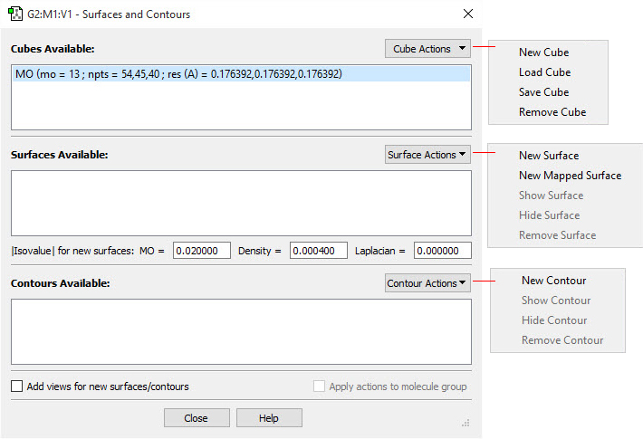
- Remove Cube: Remove an item from the list. If the cube was loaded from an external file or saved, the file is unaffected. If the cube was generated during this session and not saved, the data is discarded and must be regenerated for future viewing.
Visualizing Volumetric Data¶
The New … items on the Surface Actions and Contour Actions menus apply to the currently selected cube. The other items apply to the current surface/contour (i.e., the one in the current View window).
The checkboxes at the bottom of the dialog apply to both surfaces and contours:
-
Add views for new surfaces/contours: (no explanation in source)
-
Apply actions to molecule group: (no explanation in source)
Surfaces¶
The Surface Actions menu contains the following items:
-
New Surface: Generates a new surface from the currently selected cube and adds it to the list of available surfaces to view.
-
New Mapped Surface: Opens the Surface Mapping dialogue, which allows you to decide which type of surface to generate and from which cube to generate it. The surface generated is a scaled heat map of the specified properties. After being created, it is added to the list of surfaces that can be displayed.
-
Show Surface: Reveals a hidden surface.
-
Hide Surface: Hides a surface.
-
Remove Surface: Removes a surface from the list of surfaces that can be displayed. To view it again, it must be generated again.
The |Isovalue| for new surfaces fields below the surfaces list control the characteristics of the generated surface. Modifying their values will apply to subsequently generated surfaces but will not affect existing ones. Generally, the values should not be changed. Note: Comparing surfaces from different molecules that used different isovalues is usually misleading.
Contours¶
The Contour Actions menu contains the following items:
-
New Contour: Opens the Generate Contours window. This is used to create a new contour.
-
Show Contour: Reveals a hidden contour.
-
Hide Contour: Hides a contour.
-
Remove Contour: Removes a contour from the list of contours that can be displayed. To view it again, it must be generated again.
Generating and Manipulating Cubes¶
The New Cube selection on the Cube Actions menu in the Surfaces and Contours dialog brings up the dialog in the figure below. It is used to generate new cubes from the electron density and other data in the checkpoint file. GaussView automatically invokes the CubeGen utility.
The Type popup selects the molecular property for which to generate a cube. For most selections, additional fields will appear to further specify the desired data. For example, in the figure below, the density matrix to use when generating the electrostatic potential cube can be selected. Similarly, for molecular orbitals, the specific orbital(s) to generate are indicated via additional fields.
The Generate Cubes Dialog
This dialog will generate the type of cube specified in the Type field. Here, we are generating a cube of the electrostatic potential computed from the SCF electron density (frozen core by default).
The Grid field is used to specify the density of the cube. Increased density brings increased computational requirements. Generally, the default setting of Coarse is adequate for most visualization purposes; Medium is adequate for most printing and presentation purposes. The equivalent number of points per “side” is indicated in the second field in this line for each of the Coarse, Medium, and Fine selections. Use the Custom item to specify a different value.
Clicking the Ok button will generate the cube (as a background calculation) and exit the dialog. The new cube will appear in the Cubes Available list when the calculation finishes. You can view the job via the Calculate=>Current Jobs menu item or the equivalent Current Jobs button. Note: Cubes generated on the fly in this manner are not saved to disk unless you do so explicitly; otherwise, they will be lost when GaussView terminates.
There are several items in the Type popup that allow you to transform one or more cubes: you can scale and square cubes and add or subtract two cubes. For example, if you wanted to display a difference density, you can load in the two cube files (e.g., the densities computed in the gas phase and in solution). Once they are loaded, you can create a new cube (via Cube Actions=>New Cube) and then select Subtract Two Cubes from the Type menu.
Creating a Cube as the Difference of Two Densities
This dialog creates a new cube that is the difference between corresponding values in the two source cubes.
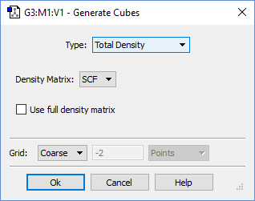
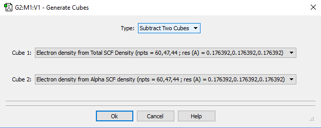
Generating Mapped Surfaces¶
GaussView also allows you to map the values of one property on an isosurface of a different property, in other words, to create a surface in which the coloring is determined by the values of a second property. The window on the right below shows an electron density surface painted according to the value of the electrostatic potential for formaldehyde.
Creating a Mapped Surface
The fields in this dialog have the following purposes:
-
Use an existing cube: Use one of the current cubes as the colorization data. Select the desired surface from the list that is present when this item is selected.
-
Generate values only at surface points: Generate the colorization data on the fly at each surface point. This is generally a faster choice. Specify the desired surface for colorization data in the popup menu and other fields.
View windows display mapped surfaces and include a color mapping toolbar at the top (as in the window on the right in the figure above). The colors used in rendering a mapped surface are based on a uniform scaling between minimum and maximum values, as specified in the text boxes to the left and right of the spectrum (respectively). Changing the values in these boxes will change the color scale and correspondingly change the coloring on the mapped surface. Like other toolbars, this color-mapping toolbar can be moved by clicking and holding on the grip bar and dragging it around the window.
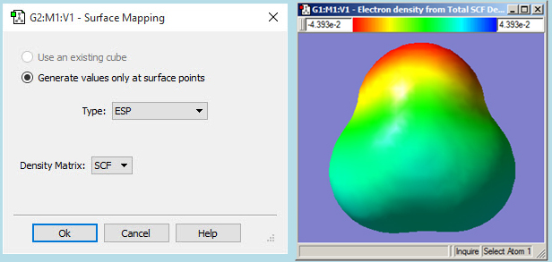
Customizing Surface Displays¶
Surfaces may be displayed in solid, transparent, and wire mesh forms. The surface display may be modified using the Display Format dialog’s Surface panel (accessed via the View=>Display Format menu item and the equivalent Display Format button on the toolbar). The dialog format for a transparent surface is displayed below.
Customizing a Surface Display Here we are modifying a transparent surface.
For transparent surfaces, the Transparent Options slider varies the opacity of the transparent surface, and the Fade mapped surface value checkbox causes the values in the midrange of the spectrum to become transparent (i.e., those close to zero).
The remaining controls are present in the dialog for all surface types.
-
The IsoValues popup controls whether the positive values, negative values, or both (the default) are displayed.
-
The Hide backside checkbox controls whether the back side of surfaces are displayed. Checking it results in increased transparency for transparent surfaces. Try turning it on and off with the Format set to Mesh to see exactly what is being hidden or revealed.
-
The Z-Clip slider may be used to remove the frontmost portions of the image to allow views into the interior of the molecular display.
Defaults for surface properties can be set via the Display Format Preferences’ Surface panel, which contains the same controls.
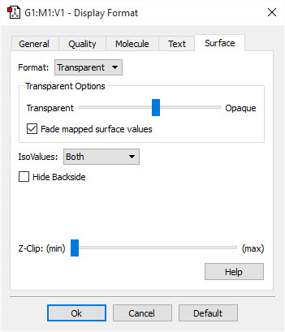
Generating Contours¶
Contours are two dimension projections of cube data into a plane. They also use the cubes generated in the Surfaces and Contours dialog. You can use the items on the Contour Actions menu to create a new contour (New Contour), to display or hide a contour (Show Contour and Hide Contour), and to remove a contour (Remove Contour). The figure below illustrates an example contour display.
Example Contour Plot This contour projects the HOMO into a plane perpendicular to the C=O bond.
The figure below illustrates the dialog that results from selecting Contour Actions=>New Contour.
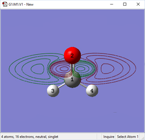
The Generate Contours Dialog
This dialog will generate a contour from an existing cube created or loaded previously via the Cube Actions menu in the Surfaces and Contours dialog. It contains four subareas:
-
2-D Grid: Specifies characteristics of the grid used to compute the contour points. You specify the units for the values in this area with the popup menu. The U and V fields specify the minimum and maximum values in the two grid directions, and the Resolution field specifies the distance between grid points.
-
Plane: Specifies the plane in which the contour will be drawn. This item is discussed below.
-
Cube: Selects the source of the contour data: either an existing cube (select it from the list) or values generated explicitly for the planar grid. The former is illustrated in the figure above; the latter is similar to the analogous feature for mapped surfaces.
-
IsoValues: Specifies the series of isovalues at which the contour will be computed. You can add or remove items from this list as desired.
Defining the Contour Plane¶
By default, the contour plane is defined as the view’s XY plane. The plane can be defined in the Contour dialog’s Plane area. It is defined as the plane perpendicular to the vector defined by the specified Normal and Origin points in the dialog. The default origin point is (0,0,0), and the default point defining the normal vector is (0,0,1).
More complex plane definitions can be specified by clicking on the Define Plane button, which brings up the dialog in the figure below. There are two methods for defining the plane: Normal Vector (as described above) and Three Points (illustrated in the figure). In the latter method, you define the origin and two other points to define the contour plane (traditionally referred to as O, P and Q). The easiest way to define the points is to specify atoms for them, but you can also enter lists of atoms (the average of their coordinates will then be used) or completely arbitrary Cartesian coordinates.
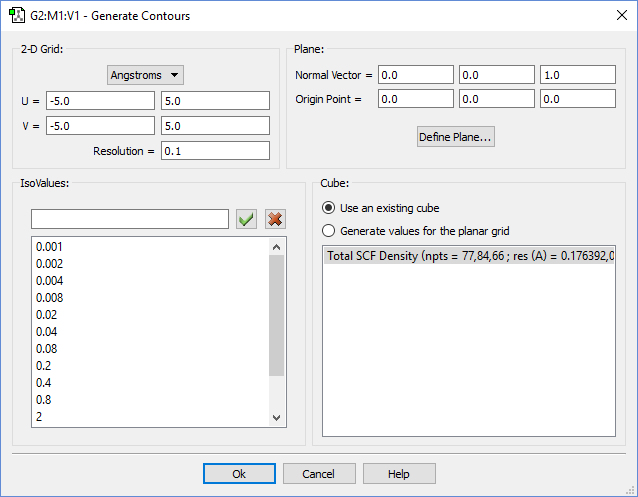
Specifying the Desired Contour Plane
In this example, we are defining the contour plane as the one containing the carbon atoms, using the 3-points-definition method. The green lines in the View window indicate the normal vector (labeled N) at the origin (O) and the line OQ. The OP line is not visible in this view, as it mirrors the C-C bond between atoms 1 and 5.
Once the contour plane is defined, you can move it further using the popup and other controls in the bottom part of the dialog. The plane can be translated or rotated about the various defined axes.
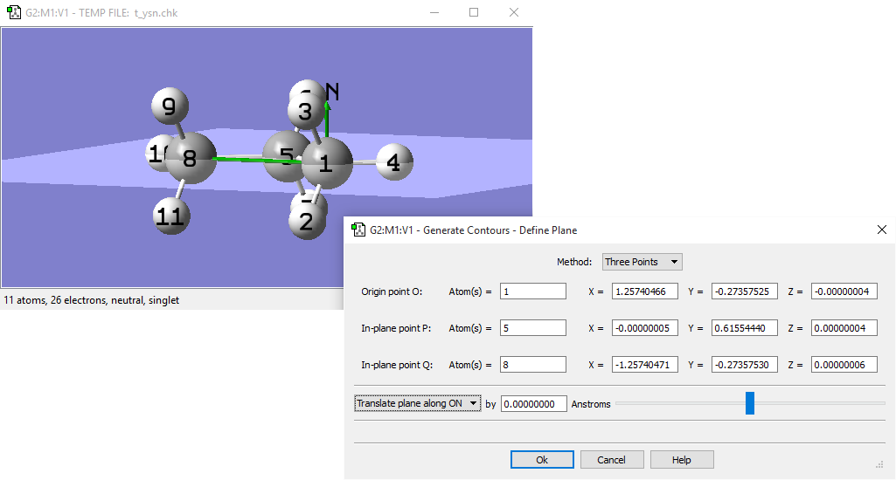
PCM Solvation Cavity¶
The PCM Solvation Display Dialog
The PCM Solvation Display displays the solvation cavity computed via the SCRF=Read facility’s PrintSpheres additional keyword.
When the Show Surface button is checked, the overall surface of the molecule is activated. Its format can be specified via three checkboxes below.
When the Show Solid button is checked, it displays the surface as a solid, hiding the molecule. When the Show Mesh button is checked, it displays the surface as a mesh, allowing you to still see the atoms and the bonds beneath the surface. When the Show Points button is checked, it displays the surface as a series of points, offering a better view of the atoms and bonds than the Show Mesh display does. More than one display type can be used at the same time.
The Color menu allows you to choose which color the surface is displayed as. This functionality is not available if the Color by Atom button is checked, which will color different portions of the surface using the color of the atoms that generated it.
The Cull Backside button removes the portion of the surface “behind” the molecule. This can sometimes result in an improved display.
The dropdown menu below the Cull Backside button is only available for the Show Mesh and Show Points buttons. The options for this are Small, Medium, and Large. They control the size of the mesh lines or the points that surround the molecule.
The Solid Opacity slider is only available when Show Solid or Show Mesh are selected. This slider controls how opaque/ transparent the surface is. The left end of the slider corresponds to a completely transparent surface (invisible), and the right end corresponds to a completely opaque surface.
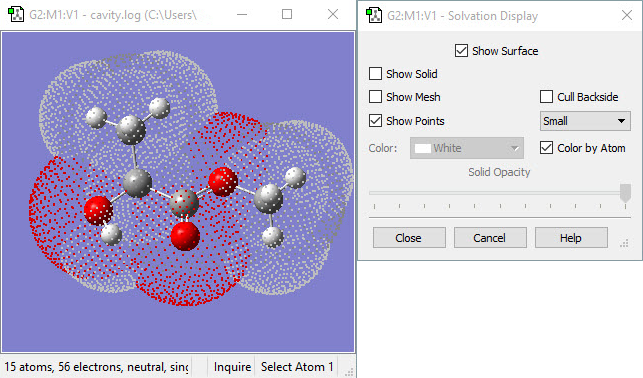
Atom Properties¶
The Atom Properties dialog
The Atom Properties dialog is used to visualize atomic properties from a completed Gaussian Calculation. The Name menu allows you to select the atomic property to display (only items present in the Gaussian log/checkpoint file will be active). The examples here will use the Mulliken Charge property for demonstration.
The Color Range fields specify the endpoint values of the color range used to color atoms by property value. By default, the range is taken from the minimum and maximum values present in the data.
The Symmetric Range for Color checkbox will force the Color Range input to use the same absolute value for the minimum and maximum. The default values are ±max(|data_max|,|data_min|).
The Fixed Range for Color checkbox will enable you to enter your own values in the Color Range input.
The Show Colors checkbox colors the atoms according to the settings in the Color Range fields:
Atom Coloring Atoms are colored by their predicted Mulliken charge.
The Show Numbers checkbox displays the numeric property value for each atom in the View window:
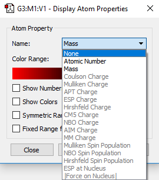
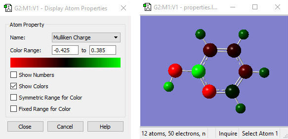
Property Value Display Each atom is labeled with its predicted Mulliken charge.
You can leave the dialog with either the Close or Cancel buttons. Close maintains the atomic properties display after the dialog closes, while Cancel restores the normal View display.
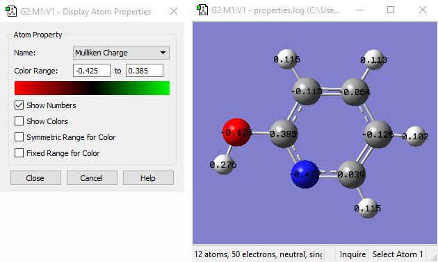
Bond Properties¶
The Bond Properties dialog is used to display predicted bond lengths and bond orders visually. The Name menu controls which property display is active.
The Show Numbers checkbox display the selected property for each bond:
Bond Lengths Numeric Display This example displays bond lengths in Å.
The Show Colors checkbox colors the atoms according to the settings in the Color Range fields. The Color Range fields specify the endpoint values of the color range used to color atoms by property value. By default, the range is taken from the minimum and maximum values present in the data. The Symmetric Range for Color checkbox will force the Color Range input to use the same absolute value for the minimum and maximum. The default values are ±max(|data_max|,|data_min|).
The Fixed Range for Color checkbox will enable you to enter your own values in the Color Range input.
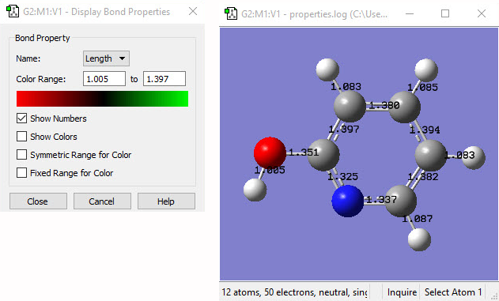
Coloring by Bond Order This example colors the bonds in ball-and-stick display mode by bond order: red=single bond, green=double bond, black=resonant bond.
You can leave the dialog with either the Close or Cancel buttons. Close maintains the atomic properties display after the dialog closes while Cancel restores the normal View display.
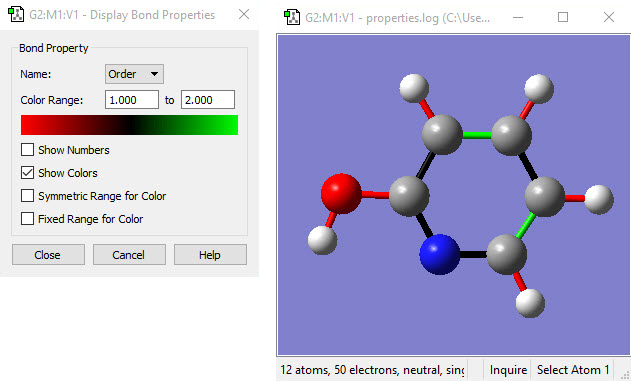
Displaying Atomic Charges Computed in Gaussian¶
The Results=>Charge Distribution menu item opens the Display Atomic Charges dialog (see figure below). This tool manages the display of partial charge density as computed by various methods in Gaussian. Displays are available in the Atomic Charges area of the dialog for the default Mulliken charges and other computed charges that are available for this job. The Type menu lists the available choices.
Displaying Atomic Charges The dialog on the left is used to control what charges are shown and how they are displayed. The window in the middle shows the numeric charge numbers display, and the one on the right shows the atoms colored by charge (reflecting the settings in the dialog on the left), as well as the dipole moment vector.
By default, the color spectrum for charge display is set by reading the maximum charge computed for the molecule and setting the range to match the charge. The range can also be adjusted manually by entering values into the Color Range fields.
The remaining checkboxes in the top portion of this dialog have the following meanings:
-
Show Numbers: Place atomic charge values next to each atom.
-
Color Atoms by Charge: Recolor each atom by atomic charge according to the specifications of the Color Range fields and the Symmetric Color Range checkbox.
-
Symmetric Color Range: Forces the positive and negative limits of the charge range to have the same absolute magnitude (regardless of the actual range of the atomic charge values).
-
Fixed Color Range: Force the charge display to use the default fixed range. This range is set to -1.0 to 1.0 by default, and it can be modified in the Charge Distribution Preferences.
The Dipole Moment area of the dialog controls whether a vector representing the dipole moment is included in the display. When the vector is displayed, you can specify the scaling factor for the vector’s length (the default is about 1.0) as well as its origin. The available values for the latter are illustrated in the preceding figure.
The buttons at the bottom of the Display Charge Distribution dialog control whether the display persists after the dialog is closed. Clicking Close will cause the Atomic Charges display to be retained, while clicking Cancel will return the View window to its normal state.
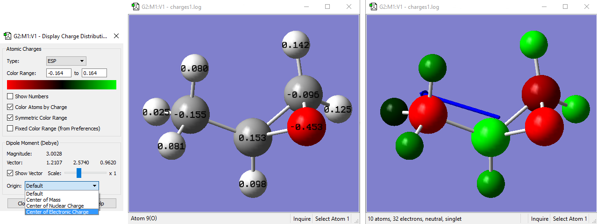